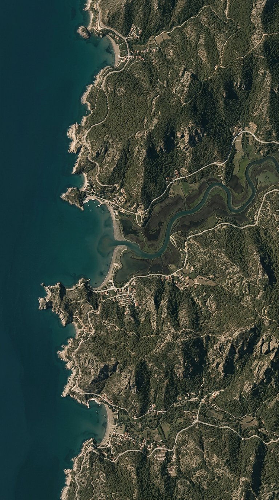

ATLASIA
ATLASIA
Atlasia rehberi · Tarih
Efes Antik Kenti
Selçuk, İzmir · Türkiye
Mobil · 07 Keşif
Arama, kategoriler ve yakın izler tek bakışta. Altın yalnız seçili filtrede ve birincil eylemde; harita üstündeki paneller opak, okunabilirlik için blur kullanılmıyor.

Nereye gitmek istersin?
ATLASIA
Atlasia rehberi · Tarih
Selçuk, İzmir · Türkiye